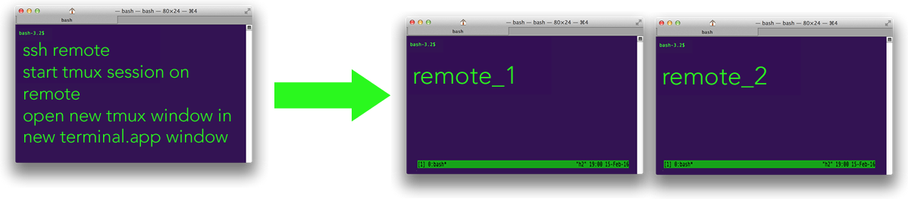

TMUX
The most popular terminal multiplexer these days is tmux.
- tmux can have several sessions.
- a session can have several windows (like tabs)
- a window can have several panes (like a divided terminal)

Commands
- Outside tmux
tmux: starts a new session.tmux new -s NAME: starts it with that name.tmux ls: lists the current sessions.tmux a: attaches the last session.tmux -t sesName: attaches to specific session.- Inside tmux:
[Ctrl+b] c: Creates a new window. To close it you can just terminate the shells doing<C-d>[Ctrl+b] 0: Go to window 0[Ctrl+b] 1: Go to window 1[Ctrl+b] 2: Go to window 2[Ctrl+b] p: Go to the previous window[Ctrl+b] n: Go to the next window[Ctrl+b] ,: Rename the current window[Ctrl+b] w: List current windows[Ctrl+b] d: Detaches the current session (remains active in background)[Ctrl+d]: Kill the current window (kill the sesion if is it the only window)- Panes: Like vim splits, panes let you have multiple shells in the same visual display.
[Ctrl+b] "Split the current pane horizontally[Ctrl+b] %Split the current pane vertically[Ctrl+b] <direction>Move to the pane in the specified direction. Direction here means arrow keys.[Ctrl+b] zToggle zoom for the current pane[Ctrl+b] [Start scrollback. You can then press<space>to start a selection and<enter>to copy that selection.[Ctrl+b] <space>Cycle through pane arrangements.
iTerm2 TMUX Integration
Each TMUX window will be a real window.
tmux -CC: Create a new sessiontmux -CC attachAttach to

Reference: https://stackoverflow.com/questions/35421819/tmux-in-multiple-terminal-app-windows
.tmux.conf
####### SAME PROMT
set -g default-terminal "screen-256color"
if 'infocmp -x tmux-256color > /dev/null 2>&1' 'set -g default-terminal "tmux-256color"'
####### MOUSE (enable scroll)
set -g mouse on # For tmux version 2.1 and above
- Oh my tmux!: Self-contained, pretty & versatile tmux configuration
TMUX Server (Autostart with systemd)
Put this file in /etc/systemd/system/tmux.service:
cd /etc/systemd/systemsudo nano tmux.service
[Unit]
Description=Tmux server
[Service]
Type=forking
User=javi
ExecStart=/usr/bin/tmux new -s 0 -d
ExecStop=/usr/bin/tmux kill-server
[Install]
WantedBy=multi-user.target
Enable service with: sudo systemctl enable tmux.service
Learn more
- Video de s4vitar: Aprendiendo a usar tmux desde 0
- Practical Tmux
- https://hackernoon.com/using-tmux-to-improve-your-terminal-experience-jt4932zv